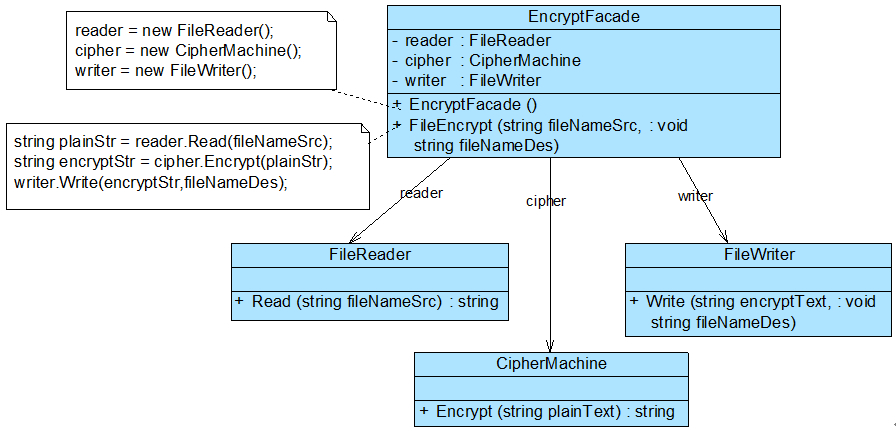

| 本文整理自：https://blog.csdn.net/lovelion/article/details/17517213，在此仅作整理学习。 |
外观模式-Facade Pattern
外观模式是一种使用频率非常高的结构型设计模式，它通过引入一个外观角色来简化客户端与子系统之间的交互，为复杂的子系统调用提供一个统一的入口，降低子系统与客户端的耦合度，且客户端调用非常方便。
外观模式概述
不知道大家有没有比较过自己泡茶和去茶馆喝茶的区别，如果是自己泡茶需要自行准备茶叶、茶具和开水，如图1(A)所示，而去茶馆喝茶，最简单的方式就是跟茶馆服务员说想要一杯什么样的茶，是铁观音、碧螺春还是西湖龙井？正因为茶馆有服务员，顾客无须直接和茶叶、茶具、开水等交互，整个泡茶过程由服务员来完成，顾客只需与服务员交互即可，整个过程非常简单省事，如图1(B)所示。
在软件开发中，有时候为了完成一项较为复杂的功能，一个客户类需要和多个业务类交互，而这些需要交互的业务类经常会作为一个整体出现，由于涉及到的类比较多，导致使用时代码较为复杂，此时，特别需要一个类似服务员一样的角色，由它来负责和多个业务类进行交互，而客户类只需与该类交互。外观模式通过引入一个新的外观类(Facade)来实现该功能，外观类充当了软件系统中的“服务员”，它为多个业务类的调用提供了一个统一的入口，简化了类与类之间的交互。在外观模式中，那些需要交互的业务类被称为子系统(Subsystem)。如果没有外观类，那么每个客户类需要和多个子系统之间进行复杂的交互，系统的耦合度将很大，如图2(A)所示；而引入外观类之后，客户类只需要直接与外观类交互，客户类与子系统之间原有的复杂引用关系由外观类来实现，从而降低了系统的耦合度，如图2(B)所示。
外观模式中，一个子系统的外部与其内部的通信通过一个统一的外观类进行，外观类将客户类与子系统的内部复杂性分隔开，使得客户类只需要与外观角色打交道，而不需要与子系统内部的很多对象打交道。
外观模式定义如下：
外观模式：为子系统中的一组接口提供一个统一的入口。外观模式定义了一个高层接口，这个接口使得这一子系统更加容易使用。 Facade Pattern: Provide a unified interface to a set of interfaces in a subsystem. Facade defines a higher-level interface that makes the subsystem easier to use.
外观模式又称为门面模式，它是一种对象结构型模式。外观模式是迪米特法则的一种具体实现，通过引入一个新的外观角色可以降低原有系统的复杂度，同时降低客户类与子系统的耦合度。
外观模式结构与实现
模式结构
外观模式没有一个一般化的类图描述，通常使用如图2(B)所示示意图来表示外观模式。图3所示的类图也可以作为描述外观模式的结构图：

由图3可知，外观模式包含如下两个角色：
-
Facade（外观角色）：在客户端可以调用它的方法，在外观角色中可以知道相关的（一个或者多个）子系统的功能和责任；在正常情况下，它将所有从客户端发来的请求委派到相应的子系统去，传递给相应的子系统对象处理。
-
SubSystem（子系统角色）：在软件系统中可以有一个或者多个子系统角色，每一个子系统可以不是一个单独的类，而是一个类的集合，它实现子系统的功能；每一个子系统都可以被客户端直接调用，或者被外观角色调用，它处理由外观类传过来的请求；子系统并不知道外观的存在，对于子系统而言，外观角色仅仅是另外一个客户端而已。
模式实现
外观模式的主要目的在于降低系统的复杂程度，在面向对象软件系统中，类与类之间的关系越多，不能表示系统设计得越好，反而表示系统中类之间的耦合度太大，这样的系统在维护和修改时都缺乏灵活性，因为一个类的改动会导致多个类发生变化，而外观模式的引入在很大程度上降低了类与类之间的耦合关系。引入外观模式之后，增加新的子系统或者移除子系统都非常方便，客户类无须进行修改（或者极少的修改），只需要在外观类中增加或移除对子系统的引用即可。从这一点来说，外观模式在一定程度上并不符合开闭原则，增加新的子系统需要对原有系统进行一定的修改，虽然这个修改工作量不大。
外观模式中所指的子系统是一个广义的概念，它可以是一个类、一个功能模块、系统的一个组成部分或者一个完整的系统。子系统类通常是一些业务类，实现了一些具体的、独立的业务功能，其典型代码如下：
class SubSystemA
{
public void MethodA()
{
//业务实现代码
}
}
class SubSystemB
{
public void MethodB()
{
//业务实现代码
}
}
class SubSystemC
{
public void MethodC()
{
//业务实现代码
}
}在引入外观类之后，与子系统业务类之间的交互统一由外观类来完成，在外观类中通常存在如下代码：
class Facade
{
private SubSystemA obj1 = new SubSystemA();
private SubSystemB obj2 = new SubSystemB();
private SubSystemC obj3 = new SubSystemC();
public void Method()
{
obj1.MethodA();
obj2.MethodB();
obj3.MethodC();
}
}由于在外观类中维持了对子系统对象的引用，客户端可以通过外观类来间接调用子系统对象的业务方法，而无须与子系统对象直接交互。引入外观类后，客户端代码变得非常简单，典型代码如下：
class Program
{
static void Main(string[] args)
{
Facade facade = new Facade();
facade.Method();
}
}外观模式应用实例
下面通过一个应用实例来进一步学习和理解外观模式。
-
实例说明
某软件公司欲开发一个可应用于多个软件的文件加密模块，该模块可以对文件中的数据进行加密并将加密之后的数据存储在一个新文件中，具体的流程包括三个部分，分别是读取源文件、加密、保存加密之后的文件，其中，读取文件和保存文件使用流来实现，加密操作通过求模运算实现。这三个操作相对独立，为了实现代码的独立重用，让设计更符合单一职责原则，这三个操作的业务代码封装在三个不同的类中。
现使用外观模式设计该文件加密模块。
-
实例类图
通过分析，本实例结构图如图4所示。
在图4中，EncryptFacade充当外观类，FileReader、CipherMachine和FileWriter充当子系统类。
-
实例代码：
-
FileReader：文件读取类，充当子系统类。
//FileReader.cs using System; using System.Text; using System.IO; namespace FacadeSample { class FileReader { public string Read(string fileNameSrc) { Console.Write("读取文件，获取明文："); FileStream fs = ; StringBuilder sb = new StringBuilder(); try { fs = new FileStream(fileNameSrc, FileMode.Open); int data; while((data = fs.ReadByte())!= -1) { sb = sb.Append((char)data); } fs.Close(); Console.WriteLine(sb.ToString()); } catch(FileNotFoundException e) { Console.WriteLine("文件不存在！"); } catch(IOException e) { Console.WriteLine("文件操作错误！"); } return sb.ToString(); } } } -
CipherMachine：数据加密类，充当子系统类。
//CipherMachine.cs using System; using System.Text; namespace FacadeSample { class CipherMachine { public string Encrypt(string plainText) { Console.Write("数据加密，将明文转换为密文："); string es = ""; char[] chars = plainText.ToCharArray(); foreach(char ch in chars) { string c = (ch % 7).ToString(); es += c; } Console.WriteLine(es); return es; } } } -
FileWriter：文件保存类，充当子系统类。
//FileWriter.cs using System; using System.IO; using System.Text; namespace FacadeSample { class FileWriter { public void Write(string encryptStr,string fileNameDes) { Console.WriteLine("保存密文，写入文件。"); FileStream fs = ; try { fs = new FileStream(fileNameDes, FileMode.Create); byte[] str = Encoding.Default.GetBytes(encryptStr); fs.Write(str,0,str.Length); fs.Flush(); fs.Close(); } catch(FileNotFoundException e) { Console.WriteLine("文件不存在！"); } catch(IOException e) { Console.WriteLine(e.Message); Console.WriteLine("文件操作错误！"); } } } } -
EncryptFacade：加密外观类，充当外观类。
// EncryptFacade.cs namespace FacadeSample { class EncryptFacade { //维持对其他对象的引用 private FileReader reader; private CipherMachine cipher; private FileWriter writer; public EncryptFacade() { reader = new FileReader(); cipher = new CipherMachine(); writer = new FileWriter(); } //调用其他对象的业务方法 public void FileEncrypt(string fileNameSrc, string fileNameDes) { string plainStr = reader.Read(fileNameSrc); string encryptStr = cipher.Encrypt(plainStr); writer.Write(encryptStr, fileNameDes); } } } -
Program：客户端测试类
//Program.cs using System; namespace FacadeSample { class Program { static void Main(string[] args) { EncryptFacade ef = new EncryptFacade(); ef.FileEncrypt("src.txt", "des.txt"); Console.Read(); } } }
-
-
结果及分析
编译并运行程序，输出结果如下：
读取文件，获取明文：Hello world! 数据加密，将明文转换为密文：233364062325 保存密文，写入文件。在本实例中，对文件src.txt中的数据进行加密，该文件内容为“Hello world!”，加密之后将密文保存到另一个文件des.txt中，程序运行后保存在文件中的密文为“233364062325”。在加密类CipherMachine中，采用求模运算对明文进行加密，将明文中的每一个字符除以一个整数（本例中为7，可以由用户来进行设置）后取余数作为密文。